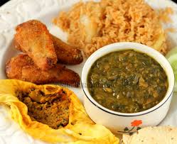

FOOD HUB.com
FAMOUS FOODS ACROSS PKISTAN


Pakistani cuisine (Urdu: پاکستانی پکوان) can be characterized by a blend of various regional cooking traditions of the Indian subcontinent, Central Asia as well as elements from its Mughal legacy. The various cuisines are derived from Pakistan's ethnic and cultural diversity.
Cuisine from the eastern provinces of Punjab and Sindh are characterized as "highly seasoned" and "spicy", which is characteristic of flavors of the Indian subcontinent. Cuisine from the western and northern provinces of Azad Jammu & Kashmir, Balochistan, Gilgit-Baltistan, Khyber Pakhtunkhwa and the Tribal Areas are characterized as "mild" which is characteristic of flavors of the Central Asian region.
International cuisine and fast food are popular in the cities. Blending local and foreign recipes (fusion food), such as Pakistani Chinese cuisine, is common in large urban centers. Furthermore, as a result of lifestyle changes, ready made masala mixes (mixed and ready to use spices) are becoming increasingly popular. However, given the diversity of the people of Pakistan, cuisines generally differ from home to home and may be different from the mainstream Pakistani cuisine.
There are some of the famous pakistani cuisineacross each province
let's check what we have.
Famous Dishes Of Sindh

Sindhi cuisine (Sindhi: سنڌي کاڌا) refers to the native cuisine of the Sindhi people from Sindh, Pakistan. The daily food in most Sindhi households consists of wheat-based flat-bread (phulka) and rice accompanied by two dishes, one gravy and one dry. Today, Sindhi food is eaten in many countries including India, where a sizeable number of Hindu Sindhis migrated following the independence in 1947.
SAI BHAJI:
Sai bhaji (Sindhi: سائي ڀاڄي) is a Sindhi vegetarian curry, consisting of dal (lentils), palak (spinach) and other vegetables. It forms a staple part of the local cuisine and is considered a rich source of nutrition due to its mix of various greens.
It is a popular household dish in Pakistan, India, and among the Sindhi diaspora.
ORIGIN:
The name of the curry is said to be derived from two words: sai (meaning "green") and bhaji (meaning "vegetables"), thus indicating the ingredients used to cook the dish. Sai bhaji is consumed throughout summers and winters, as a night and day meal respectively. It is favoured due to its healthy nutrition and simplicity of preparation. In the dry regions of interior Sindh, seasonal vegetables are dried and stocked for year-round cooking purposes.
SAI BHAJI RECIPE
INGREDIENTS:
7 1⁄2 cups fresh spinach leaves
1 tablespoon extra virgin olive oil
9 garlic cloves, peeled, washed and finely chopped
2 medium onions, peeled, washed and finely chopped
2 inches piece ginger, peeled, washed and finely chopped
1 tablespoon cumin seed
2 medium green chilies, washed and slit
3 medium tomatoes, washed and finely chopped
4 teaspoons coriander powder
2 teaspoons turmeric powder
1⁄2 teaspoon red chili powder
3⁄4 th cup channa dal, washed thoroughly, soaked and drained
2 medium potatoes, peeled, washed and cut into cubes
2 teaspoons salt
1 1⁄2 cups water
1⁄2 bunch fresh dill leaves, finely chopped (or soya or shepu leaves)
1⁄2 bunch green sorrel, finely chopped (ambut chukka or khatti bhaji)
DIRECTIONS
1. Buy 1 kg of spinach leaves and wash them thoroughly. Separate the leaves from the stalks. Chop the leaves finely to make 7 1/2 cups approximately of chopped spinach leaves.
2. Take channa dal in a bowl. Clean it to remove stones, dirt, etc. Wash it thoroughly and then soak it in plenty of water for 20 minutes. Drain before using for preparation.
3. Heat oil in a pot/pressure cooker.
4. Once it is hot, add cumin seeds and allow to crackle.
5. Once the cumin seeds stop crackling, add chopped ginger and garlic. Stir-fry for a few minutes or until the raw smell of ginger and garlic is gone.
6. Fold in chopped onions and chopped green chillies. Stir-fry until browned.
7. Add all the spice powders i.e. turmeric, red chilli and corriander powders.
8. Now add the drained channa dal. Mix well and stir-fry for five minutes on medium heat.
9. Fold in the cubed potatoes. Mix well and allow them to cook for 5 minutes.
10. Next add the chopped tomatoes and mix well. Cook on medium-high flame until softened.
11. Fold in the chopped spinach leaves, ambut chukka and fresh dill leaves. Mix thoroughly.
12. Add salt to taste and a cup of water. Mix well.
13. Cover and allow to pressure cook for upto 4 whistles. If you are cooking this in a pot, then cover the pot and allow to cook on medium-high flame for about 45 minutes or until this appears to be very mushy.
14. Remove from heat and mash well. A good way to do this is to mash from all sides to the center gradually.
15. Mix in 1/2 cup of water.
16. Remove from flame and serve hot with Brown rice pulao.
FAMOUS PUNJABI FOOD:
Punjabi cuisine is a culinary style originating in the Punjab, a region in the northern part of the Indian subcontinent, which is now divided between Punjab, India and Punjab, Pakistan. This cuisine has a rich tradition of many distinct and local ways of cooking. One is a special form of tandoori cooking that is now famous in other parts of India, UK, Canada, and in many parts of the world.
The local cuisine of Punjab is heavily influenced by the agriculture and farming lifestyle prevalent from the times of the ancient Harappan Civilization. Locally grown staple foods form the major part of the local cuisine. Distinctively Punjabi cuisine is known for its rich, buttery flavours along with the extensive vegetarian and meat dishes. Main dishes include Sarson ka saag (a stew whose main ingredient is mustard greens) and makki ki roti (flatbreads made with cornmeal).
Basmati rice is the indigenous variety of Punjab and many varieties of rice dishes have been developed with this variety. Many vegetable and meat based dishes are developed for this type of rice
SAAG RECIPE:
INGREDIENTS:
2 tablespoons grassfed ghee
1 red onion, finely chopped
2-inch knob ginger, minced
2 heaping tablespoons or 7 cloves garlic, minced (I used my garlic press)
1-2 Serrano peppers, minced (remove seeds/rib if you don’t like it spicy!)
2 teaspoon salt, adjust to taste
1 teaspoon coriander powder
1 teaspoon cumin powder
½ teaspoon turmeric powder
½ teaspoon Kashmiri chili powder (or a little less if using cayenne)
½ teaspoon freshly ground black pepper
1 pound (16 ounces) fresh baby spinach (large container), rinsed
1 pound (16 ounces) chopped mustard leaves (stem removed), rinsed
DIRECTIONS
Add 2 tablespoons ghee, onion, ginger, garlic, Serrano pepper, and spices to your crock pot. Set on high for 1 hour.
While that’s cooking, grab a very large pot. Add the mustard and spinach leaves to the large pot – then fill with water (do not put lid on pot!*).
Bring the pot to a boil and cook for 5 minutes. Drain leaves and let them cool.
Once cool, place leaves in a blender and blend to your desired consistency (add a little water as needed to help you blend).
Place the blended leaves into your crock pot, reduce heat to low, put lid on and cook for 2 hours.
After 2 hours, add 1 tablespoon ghee, garam masala and pinch of kasoori/fenugreek leaves. Mix well and let this cook for another hour on low.
Serve this saag with a heaping spoonful of ghee on top!
FAMOUS BLOCHI FOOD:
Balochi cuisine is the food and cuisine of the Baloch people from the Balochistan region, comprising the Pakistani Balochistan province, the Sistan and Baluchestan Province in Iran and Balochistan, Afghanistan. Baloch food has a regional variance in contrast to the many cuisines of Pakistani and Iran.
DUM-PUKHT RECIPE
INGREDIENTS:
Mutton - 1 Kg
Goat Fat (Charbi) - 1 Kg
Potatoes - 5 Pcs (Small)
Tomatoes - 5 Pcs (Small)
Green Chili - 4 Pcs
Lemon Juice - 2 Pcs
Black Pepper Powder - 1 Teaspoon
Salt - To Taste
Maida (All Purpose Flour) - 2 Cups
DIRECTIONS
Step 1
Take a deep pot. Layer the goat fat (Charbi) at the bottom. Now make a layer of the mutton pieces on top of it.
Step 2
Set the veggies above it and squeeze the lemon juice over it. Sprinkle the salt and pepper powder over it. Do not mix. Leave it as it is.
Step 3
Now take the maida mix to make the dough. Keep the water less so that it holds the lid properly. Now place the dough over the borders of the pot and cover it with lid. Again put the dough over the lid and pack it properly so that the air doesn’t leak.
Step 4
Cook on high heat for about 10 minutes and then lower the heat. Leave it to cook for another 2 to 3 hours. You will hear a whistle like sound and hot air will leak from it.
Step 5
After 3 hours remove the lid and your Afghani Dum Pukht or Slow Cooked Afghani Mutton is ready to serve. You can have it raw or with rice. mutton will be cooked perfectly and will be very tender. You will love eating it.
FAMOUS PAKHTOON FOOD:
Pashtun cuisine (Pashto: پښتني خواړه) refers to the cuisine of the Pashtuns, who are predominant in Afghanistan and western Pakistan. The cuisine of the Pashtun people is covered under Afghan cuisine and Pakistani cuisine, and is largely based on cereals like wheat, maize, barley and rice as well as a plethora of meat dishes that includes lamb, beef, chicken, and fresh fish. Accompanying these staples are also dairy products (yogurt, whey, cheeses), including various nuts, locally grown vegetables, as well as fresh and dried fruits. Cities such as Peshawar, Jalalabad, Kabul, Quetta and Kandahar are known for being the centers of Pashtun cuisine.
CHALI KABAB RECIPE:
INGREDIENTS:
1 kg Beef mince
1 tbsp White cumin chopped
1 tsp Coriander
Salt (as required)
4 pieces Green Chili chopped
3 pieces Tomato chopped (without seeds)
3 tsp Red pepper (crushed)
3 tbsp Green coriander (chopped)
1 & 1/2 tbsp Pomegranate seeds (crushed)
2 tsp Ginger (chopped)
1 tsp Black pepper (crushed)
1/2 Onion (chopped)
1 Eggs
6 tbsp Corn Flour
Oil (as required)
DIRECTIONS
1- In a pot take beef mince, salt, cumin, coriander, green chili, tomato, red pepper crushed, green coriander, pomegranate seeds, mint, ginger, black pepper, onion, egg and corn flour and mix it well and make kebabs.
2- Take oil in a pot and fry them. Your tasty Chapli Kebabs are ready.
Cooking Time: 40 Minutes Serves: 3-4
Name:RABEEA RAZZAQ
Taken From: https://en.wikipedia.org/wiki/